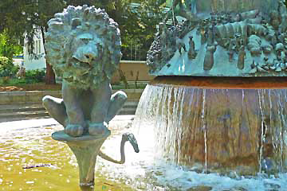
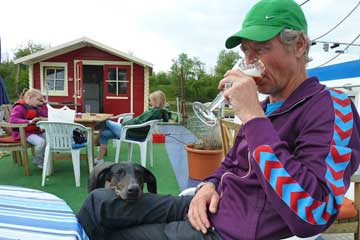
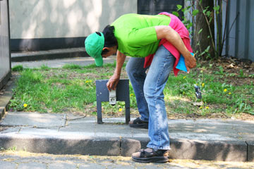
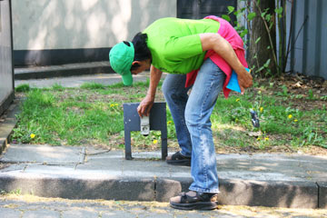
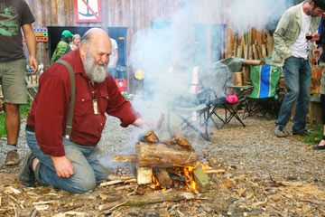
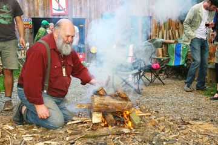
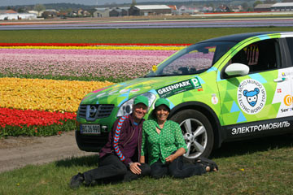
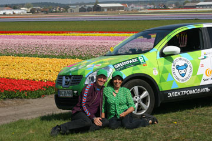

Ved Magdeburg i det tidligere DDR drejede vi fra motorvejen for at finde strøm. At det stadig var helligdag gjorde det svært. Vi fandt tilsidst ned til lystbådehavnen ved Elben. Men der var lange trapper ned til molerne og strømstikkene. Udenpå en bygning fik vi heldigvis øje på et gammelt glemt stik med 16 ampere strøm, lige hvad Grønne kunne bruge. Igen var der ingen at spørge, så vi koblede bare på. Inde i Magdeburg så vi en interessant udstilling om byen, som var blevet næsten totalt udslettet i 1631 under 30-årskrigen, og igen under 2.verdenskrig. Da vi fire timer senere vendte tilbage til Grønne var den totalt opladet, og havnemesteren og hans kone inviterede os på et glas øl nede på en flydende mole. Ved ankomsten til Berlin havde Grønne kørt ca. 300 km og havde stadig 15% strøm tilbage - nok til 30 km.
Nina
Vi valgte at køre på motorvejen for at komme hurtigt frem. Trehundrede kilometer var dagens mål. Grønne havde brug for en opladning midt på dagen, men alt var lukket. I Osnabruck besøgte vi rådhuset hvor den Vestfalske Fred var blevet sluttet i 1648. Vi ville have spurgt efter strøm på brandstationen men fandt ikke derhen. Vi fik så øje på et par gode elstik udenpå en container ved togremisen. Da der ikke var nogen at spørge koblede vi bare på. Om aftenen kom vi til en campingplads hvor der var stor påskefest med musik, øl, pølser og bål.
Nina
 

Vi tog afsked med Berndt og Patti og kørte ud i det forårsgrønne land. Vi ledte efter strøm på en markedsplads, men nej. Vi travede forbi mange kolonihaver hvor der var hængt malede æg på træerne. Grønne fik så en middagsopladning ved et bilglasfirma. Dagen sluttede på en campingplads hvor de faste beboere hyggede sig med fjernsyn, fodbold og øl indtil midnat. I en lille mørk kælder under en gammel swimmingpool fandt vi et godt 16 ampere strømstik til Grønne.
Nina
 

Grønne fik en hviledag og vi nød det gode vejr foran huset. Om eftermiddagen kørte Berndt os en tur i omegnen, hvor vi bl.a. så en kunstig sø med en oversvømmet landsby, og "Vogelsang", et sted hvor Hitler havde avlet “ariere”. Vi så også et slot med voldgrav. Imens havde Patti forberedt en fest med mad og drikke, så Hjalte og jeg hængte alle vores flag og Moto Mundo-banneret op. En journalist kom og interviewede os om jordomrejsen. Resten af aftenen festede vi med mad og bål sammen med landsbyens beboere. Bernd som ud over sin passion for motorcykel-rejselitteratur er meget interesseret i lokalhistorie, har en omfattende viden, som han deler på hjemmesiden www.hammer-eifel.de. Se også www.berndtesch.de
Nina


Vi ville nå frem til Bernd Tesch og Patti i Achen, så vi tog motorvejen fra morgenstunden og satte god fart på. Ved frokosttid fandt Hjalte et bilfirma med en flink bos og et stort værksted. Grønne blev sat til opladning i tre timer med trefaset strøm, så begge bilens to ladere kørte. Imens gik Hjalte og jeg en 10 km lang tur i det varme sommervejr. Senere på dagen holdt vi en kaffepause i Mastrict. Derfra tog vi de små krogede veje. Grønne havde kørt 300 kilometer da den løb ud for strøm og gik i stå! Heldigvis var vi kun 200 meter målet. En nabo kom os straks til hjælp med tilbud om strøm, og så gik vi de sidste meter til fods. En halv time senere kunne Grønne køre igen, og vi havde en hyggelig aften med rejsesnak sammen med Berndt og Patti, som havde tændt et bål på terrassen.
Nina
 

Vi kørte mod byen Lisse for at se de blomstrende tulipanmarker, og vi blev straks overvældede af de strålende farver og duften af de mange blomstrende løgplanter. Foran os blomstrede ikke alene marker med tulipaner men også marker med påskeliljer, pinseliljer og hyacinter. Da vi havde spist frokost med udsigt til de blomstrende marker, kørte vi ud til kysten, der var ganske nær ved. Vejret var varmt som på en sommerdag, og den brede sandstrand var fuld af glade solbadere, skønt vandet endnu var iskoldt. Til sidst kørte vi til Amsterdam og opdagede at parkeringspladserne til elbiler allerede var optagede! Vi satte Grønne i kø, og gik selv en lang tur mellem kanalerne. Vi kom hjem til campingpladsen med en stor pose blandede tulipanløg.
Nina
Electric Cars Europe, ECE, inviterede os til at besøge dem i Lochem i det østlige Holland. ECE konverterer eksisterende biler til el. Firmaet har nær kontakt med Lotus i England og konverterer Lotus Elise til en heftig el-sportsvogn - i direkte konkurrence med Tesla. Vi spiste en meget hyggelig og uformel frokost med Harald i solen udenfor produktionshallerne. Harald Engel gav mig en lang prøvetur i deres elektriske VW Golf. En meget overbevisende bil: 150 KW motor, forrygende accelleration og fremragende køreegenskaber - men meget dyr. Flere interessante nyheder var på vej i internationalt samarbejde. For kinesiske Geely udvikler de en elektrisk udgave en af Geelys mindre modeller, vist på udstillingen i Amsterdam. Endnu er markedet småt, bilerne bygges en og en og er derfor dyre. Men det forventes at blive stort i de kommende år. Mange erfaringer og megen ekspertise udvikles rundt omkring, det er mange tusinde mennesker beskæftiget med at udvikle elbiler. Spørgsmåler er om det bliver de store bilfabtikker der kommer til at erobrer hele markedet?
Nina og Hjalte


Amsterdam er en dejlig by og sommerlyset blinkede i kanalerne da vi kørte ind for at møde kommunens elbil-folk. 51% af Amsterdams borgere cykler til arbejde, men bilerne klemmer sig ind alle vegne og luftkvaliteten bliver værre og værre. Derfor satser Amsterdam kommune stort på elbiler. Pieter Swinkels fra Amsterdam Elektrisch fortalte om byens indsat : Infrastruktur med ladestandere, aftaler med elbilproducenter og subsidier til køb af elbiler. Man forsøger at tiltrække internationale elbilfirmaer til byen og bruger strategisk kommunikation for at gøre elbiler synlige. Resten af dagen var vi gæster på den store biludstilling AutoRAI i Amsterdam. Grønne kom ind og ladede sammen med alle de nye elbiler og Nina og jeg blev interviewet om vores rejse og erfaringer med elbilen. Som i Detroit var ekstreme elbiler trækplasteret hos de fleste fabrikker. De gode gamle benzinbiler fyldte op i anden række. Nu ikke solgt på enorme hestekræfter og topfart, men på minimale gram co2. Solen gik ned over Ij-floden og ænderne skræppede bag teltene på campingpladsen. Verden går fremad.
Hjalte


Afstanden fra Rotterdam til Amsterdam er ganske kort, så vi brugte formiddagen på at gå på Rotterdams fotomuseum. På motorvejen var der ikke meget at se så vi styrede Grønne ud på de små veje. Straks var der vand overalt - kanaler og broer gennemskærer det nordlige Holland Mange gamle møller var bevarede, og et par tulipanmarker i fuldt flor kom vi også forbi. Dagen sluttede på Zeeburg Camping, hvor vi lejede en hytte, lige på kanten af en kanal. Grønne måtte stå natten over uden strøm, men den har strøm nok tilbage til at køre ind til Amsterdams centrum i morgen.
Nina

Efter at vi havde sagt god morgen til Grønne som stod i parkeringshuset, og set at den var opladet til 93% gik vi til fods ud i Rotterdam. Vores hotel lå i centrum, så der var ikke langt med til havnen og kanalerne hvor der var både nye og gamle broer. På hjemvejen fik vi kaffe med hjemmelavet æblekage ombord på et gammelt fyrskib. Bagefter så vi at vi var kommet til et søfartsmuseum, hvor hele samlingen af gamle skibe lå i vandet. Vi kom ombord i to af dem, som var restaurerede og udstyrede som dengang de sejlede.
Nina